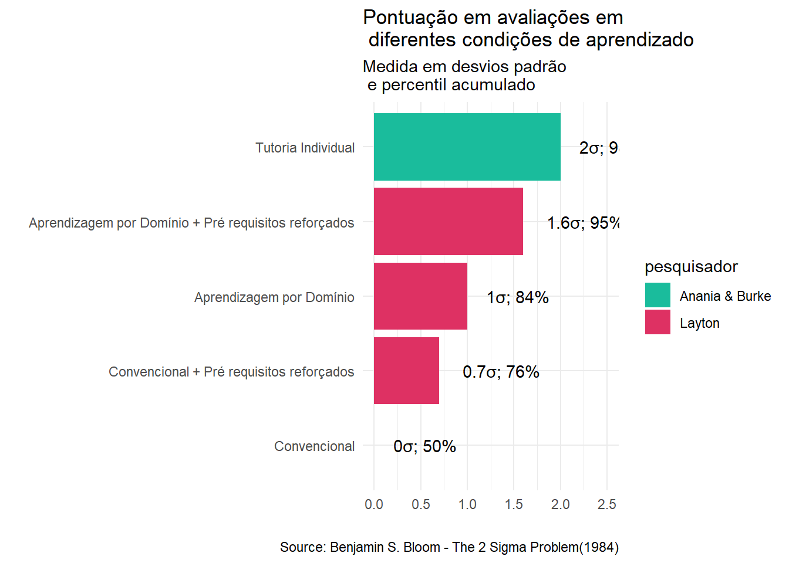

Problema de 2 sigma de Bloom
Crianças aprendem mais e outras menos
Demanda ou problema
O que é o problema de 2 sigma de Bloom?
Imagine que seu filho está numa sala de aula com 30 alunos. Todos aprendem com o mesmo professor, no mesmo ritmo, com o mesmo material. Isso é o ensino convencional.
Agora imagine que seu filho tivesse um tutor particular, alguém que ensinasse só para ele, no ritmo dele, tirando dúvidas, reforçando o que ele não entendeu, e adaptando o conteúdo às necessidades dele. O que você acha que aconteceria com o desempenho dele?
Foi exatamente isso que o pesquisador Benjamin Bloom (1984) descobriu. Alunos que recebem ensino individualizado com tutoria têm um desempenho muito melhor, cerca de 2 desvios padrão acima dos alunos do ensino convencional. Isso é o que ele chamou de efeito 2 sigma.
O que significa “2 sigma”?
Sem entrar muito na matemática, “2 sigma” quer dizer que esses alunos com tutoria aprendem melhor do que 98% dos alunos que estão no ensino convencional. É uma diferença enorme!
| Média e desvio padrão das notas | ||
|---|---|---|
| Tipo aprendizado | Média | Desvio padrão |
| Convencional | 60.9 | 9.1 |
| Aprendizagem por Domínio | 69.6 | 7.7 |
| Tutoria Individual | 75.5 | 4.7 |
| Tamanho do efeito entre os grupos | ||||||
|---|---|---|---|---|---|---|
| Item avaliado | Grupo Controle | Grupo Tratamento | Tamanho do efeito | n grupo1 | n grupo2 | Magnitude |
| pontuacao | Convencional | Aprendizagem por Domínio | −1.0 | 100.0 | 100.0 | large |
| pontuacao | Convencional | Tutoria Individual | −2.0 | 100.0 | 100.0 | large |
Por que isso é um problema?
Porque, apesar de sabermos que a tutoria personalizada funciona muito bem, ela é cara e difícil de aplicar em larga escala. Não dá para colocar um tutor para cada aluno em todas as escolas.
Eu poderia dizer que o “problema de 2 sigma de Bloom” seria como perguntar como podemos fazer com que todos os alunos aprendam tão bem quanto os que têm tutores, mas sem precisar de um tutor para cada um?
Por que isso é importante?
Esse problema é muito relevante porque mostra que todos os alunos podem aprender muito mais, se forem ensinados da forma certa. Isso também incentiva a busca por novas formas de ensino, como o uso de tecnologia, ensino adaptativo, inteligência artificial, ajudando pais e educadores a entenderem que o potencial dos alunos é muito maior do que parece no ensino convencional.
O que mais Bloom descobriu?
Além do resultado de avalição(pontuação), a tutoria individualizada citada no trabalho de Benjamin Bloom mostra que houve também, melhorias significativas em tempo de engajamento, atitudes dos alunos e redução da correlação entre aptidão inicial e desempenho final, especialmente no grupo de tutoria. Me explique melhor cada um desses componentes.
Esses indicadores que Bloom menciona, são fundamentais para entender algo mais além do desempenho acadêmico, como por exemplo a qualidade da experiência de aprendizagem. Os detalhes e exemplos práticos são mostrados abaixo.
1. Tempo de Engajamento é o tempo efetivo que o aluno passa envolvido ativamente com a aprendizagem seja ouvindo, lendo, resolvendo problemas, discutindo ou praticando. Por que é importante? Quanto maior o tempo de engajamento, maior a probabilidade de o aluno compreender e reter o conteúdo(e.g. em uma aula convencional, alguns alunos podem se distrair ou ficar passivos. Já em tutoria, o aluno está constantemente envolvido, onde o tutor faz perguntas, propõe desafios, ajusta o ritmo. Como resultado, o aluno passa mais tempo aprendendo de fato, o que contribui para melhores resultados.
2. Atitudes dos Alunos é a motivação, interesse, confiança e satisfação dos alunos em relação à aprendizagem. Por que é importante? Alunos com atitudes positivas tendem a persistir diante de dificuldades, buscar ajuda, e se envolver mais profundamente com o conteúdo(e.g. um aluno que recebe atenção individualizada sente que está progredindo, isso gera confiança “eu consigo aprender!” e motivação “quero continuar aprendendo!”. Em contraste, alunos em ambientes convencionais podem se sentir perdidos ou desmotivados se não acompanham o ritmo da turma).
3. Redução da Correlação entre Aptidão Inicial e Desempenho Final Normalmente, há uma correlação entre a aptidão inicial que são conhecimentos prévios, habilidades cognitivas, e o desempenho final que é pontuação ou domínio do conteúdo. Por que é importante? Em ambientes convencionais, alunos com maior aptidão inicial tendem a ter melhor desempenho. Isso amplia as desigualdades(e.g na tutoria, o ensino é adaptado ao ritmo e às necessidades de cada aluno, permitindo que alunos com menor aptidão inicial também atinjam altos níveis de desempenho. Como resultado, a correlação entre “o que o aluno sabia antes” e “o que ele aprendeu” diminui, mostrando que todos podem aprender bem com apoio adequado).
Abordagem de Layton - Pré-Requisitos Cognitivos
No Artigo de Bloom, ele cita que Layton sugeriu que uma abordagem para o problema de 2 sigma, seria usar o aprendizado de domínio durante o curso avançado em uma sequência e além disso, tentar melhorar os pré-requisitos de entrada cognitiva inicial dos alunos no começo do curso. Me explique melhor essa abordagem e se possível me mostre com exemplos práticos.
A abordagem sugerida por Layton Soto (1983) para enfrentar o problema de 2 sigma de Bloom envolve duas estratégias principais:
- Melhorar os pré-requisitos cognitivos dos alunos antes do início do curso. Os detalhes sobre os pré-requisitos estão mais abaixo.
- Utilizar o aprendizado de domínio (mastery learning) em sequência ao longo do curso avançado.
Vamos entender cada uma delas com mais profundidade e exemplos práticos.
1. Melhoria dos Pré-Requisitos Cognitivos
Bloom identificou que as características de entrada dos alunos como conhecimentos prévios, habilidades cognitivas e atitudes, têm grande impacto no desempenho acadêmico. Layton propôs que, antes de iniciar um curso avançado, os alunos deveriam passar por uma fase preparatória que fortaleça essas características. Vamos imaginar uma situação hipotética de curso de física avançada. Antes de iniciar o curso, os alunos fazem um módulo introdutório sobre álgebra vetorial e cinemática básica, com foco em resolução de problemas. Outra situação seria, um curso de programação usando liguagem Python ou R. Neste caso, os alunos passam antes por um minicurso sobre lógica de programação e estruturas de dados básicas, com exercícios práticos e feedback imediato.
Essa preparação reduz a variabilidade entre os alunos e aumenta a chance de todos acompanharem o conteúdo avançado com sucesso.
2. Aprendizado de Domínio (Mastery Learning) em Sequência
O aprendizado de domínio é uma abordagem em que os alunos só avançam para o próximo conteúdo após dominar completamente o anterior. Bloom mostrou que isso pode levar a um ganho de até 1 sigma em desempenho. Layton sugeriu aplicar essa técnica em sequência, ou seja, ao longo de todo o curso, com ciclos.
Esse diagrama representa um ciclo contínuo de aprendizagem, onde o ensino leva à avaliação formativa, que por sua vez gera feedback e correções, culminando em uma nova avaliação para verificar o progresso
Exemplo prático no curso de Matemática Módulo 1 é algebra onde os alunos fazem exercícios e testes formativos que são aqueles sem objetivo de avaliação com nota, são apenas para identificar se eles aprenderam. Se não dominarem, recebem atividades corretivas e refazem o teste, só então avançam para o Módulo 2 que sobre funções.
Esse ciclo contínuo garante que todos os alunos estejam prontos para os próximos desafios, reduzindo lacunas de aprendizagem.
Combinação das Estratégias
A proposta de Layton é que a combinação dessas duas abordagens. Entrada cognitiva fortalecida + aprendizado de domínio as quais podem aproximar o desempenho dos alunos ao nível da tutoria individual, que é o cerne do problema de 2 sigma. Bloom e seus colegas chegaram a testar combinações de variáveis alteráveis (como feedback, tempo de estudo, ambiente familiar) e observaram que algumas combinações se aproximam do efeito de 2 sigma.
Impacto Esperado
- Redução da variabilidade entre alunos.
- Maior engajamento e tempo em tarefa.
- Desempenho médio significativamente superior ao ensino convencional.
E qual o impacto observado?
No artigo cita também que mais importante, foi a melhora no desempenho das turmas “aprimoradas” em relação às outras duas turmas no primeiro teste formativo do curso avançado. As duas turmas aprimoradas, que haviam sido auxiliadas nos pré-requisitos iniciais, apresentaram aproximadamente 0.7 sigma a mais do que as outras duas turmas no primeiro teste formativo aplicado ao final de um período de aprendizado de duas semanas no curso avançado. Me fale mais sobre esses resultados.
O trecho mencionado sobre o desempenho das turmas “aprimoradas” no primeiro teste formativo é um dos pontos mais reveladores do artigo de Bloom (1984) sobre o problema de 2 sigma.
O Experimento e os Resultados
No estudo, Bloom e seus colegas compararam quatro grupos de alunos em um curso avançado. Dois desses grupos receberam intervenções para melhorar os pré-requisitos cognitivos antes do início do curso, enquanto os outros dois não.
Após duas semanas de instrução, todos os grupos realizaram um teste formativo. Os resultados mostraram que: - As duas turmas aprimoradas(com reforço nos pré-requisitos) tiveram um desempenho 0.7 sigma acima das turmas que não receberam essa preparação. Esse ganho foi observado logo no primeiro teste, indicando que a intervenção nos pré-requisitos teve um impacto imediato e significativo. O resultado é importante por vários motivos:
- Validação da hipótese de Layton: A ideia de que melhorar os pré-requisitos cognitivos pode elevar o desempenho inicial dos alunos foi confirmada empiricamente.
- Redução da variabilidade: Ao nivelar os conhecimentos iniciais, os alunos começaram o curso com uma base mais homogênea, o que facilita o ensino em grupo.
- Potencial para escalabilidade: Diferente da tutoria individual, essa abordagem pode ser aplicada em turmas maiores com custo relativamente baixo.
| Condições de aprendizado utilizados na pesquisa | |
|---|---|
| Tipo aprendizado | Detalhes |
| Convencional | Todos os alunos aprendem o mesmo conteúdo, ao mesmo tempo, com o mesmo ritmo. A aula segue um cronograma fixo, e as provas acontecem em datas marcadas, independentemente de o aluno ter dominado o conteúdo ou não |
| Aprendizagem por Domínio | Ninguém avança para a próxima etapa até dominar bem a anterior. Se o aluno ainda não entendeu bem a matéria, ele recebe mais apoio, mais tempo e atividades extras até que esteja pronto para seguir em frente. |
| Pré-requisitos Reforçados | Antes de ensinar um novo conteúdo, o professor reforça os conhecimentos básicos que são essenciais para entender o que vem a seguir. É como revisar os alicerces antes de construir o próximo andar. |
| Tutoria Individual | O aluno recebe atenção personalizada de um tutor (professor ou colega mais experiente), que adapta o ensino às suas necessidades específicas. |
O gráfico abaixo demonstra os resultados dos estudos de Anania (1981) e Burke (1983) citados por Bloom em sua puplicação.

Expanda para saber o que são pré-requisitos cognitivos
O que são os “pré-requisitos cognitivos”?
São conhecimentos e habilidades que os alunos precisam ter antes de iniciar um curso avançado(e.g. conceitos fundamentais da disciplina, estratégias de resolução de problemas, habilidades metacognitivas como autorregulação e monitoramento do próprio aprendizado).
Exemplo prático aplicado
Imagine um curso de cálculo diferencial e integral. Antes de começar, os alunos passam por um módulo de revisão de funções, álgebra e trigonometria, atividades diagnósticas com feedback imediato, e xercícios de raciocínio lógico e visualização gráfica.
Após duas semanas, os alunos fazem um teste sobre limites e derivadas. Os que passaram pela preparação têm desempenho significativamente superior como no estudo de Bloom.
E o que seriam as intervenções para melhorar os pré-requisitos cognitivos?
São estratégias pedagógicas e terapêuticas que visam desenvolver habilidades mentais fundamentais para a aprendizagem, como atenção, memória, linguagem, percepção e raciocínio. Esses pré-requisitos são essenciais para que os alunos possam compreender, processar e aplicar o conteúdo escolar de forma eficaz. Essas intervenções podem ser aplicadas por professores, psicopedagogos, neuropsicólogos ou terapeutas ocupacionais, dependendo da necessidade e do contexto.
Quais tipos de pré-requisitos cognitivos?
Algumas das habilidades mentais básicas que sustentam o aprendizado, são listadas abaixo:
Atenção focal, sustentada, seletiva(e.g. jogos de atenção seletiva como encontrar diferenças entre figuras, atividades com tempo limitado para manter foco).
Memória de curto prazo, longo prazo e de trabalho(e.g jogos de memória como cartas, ludo e sequências, repetição espaçada de conteúdos “aqui cabe um comentário sobre o trabalho de Sarma do MIT” e uso de mapas mentais).
Percepção visual e auditiva que são atividades de discriminação de sons e letras, exercícios de coordenação visomotora como ligar pontos, copiar figuras, tTreinamento auditivo com rimas e padrões sonoros.
Linguagem oral e escrita contação de histórias e descrever coisas, jogos de vocabulário e categorização, atividades de consciência fonológica como rimas.
Raciocínio lógico e resolução de problemas problemas matemáticos contextualizados, jogos de tabuleiro e quebra-cabeças, sequências lógicas e padrões.
Funções executivas como planejamento, organização e autocontrole. Planejamento de tarefas com checklists, jogos que exigem controle inibitório como “jogo Simon diz”, “jogo do stop”, atividades que envolvem tomada de decisão.
Três elementos do aprendizado contínuo
No artigo, ele também cita que eles esperam que esta abordagem de Leyton para o problema 2 sigma seja considerada uma solução amplamente aplicável e econômica, disponível à maioria dos professores que desejam melhorar a aprendizagem dos alunos, o autoconceito acadêmico dos alunos, bem como as atitudes e o interesse dos alunos no aprendizado. Nesse contexto o que seria aprendizagem dos alunos, o autoconceito acadêmico dos alunos, bem como as atitudes e o interesse dos alunos no aprendizado, quais suas características e diferenças entre eles.
1. Aprendizagem dos Alunos
É o ganho real de conhecimento, habilidades e competências que os alunos desenvolvem ao longo do processo educacional como domínio de conteúdos(e.g. fatos, conceitos, procedimentos), capacidade de aplicar o conhecimento em novos contextos, desenvolvimento de habilidades cognitivas(e.g. análise, síntese e avaliação).
É mensurável por meio de avaliações formativas e somativas e é o foco central de qualquer intervenção educacional. Dica Avaliações formativas, são aquelas realizadas durante o processo de aprendizagem para monitorar o progresso e ajustar o ensino, já as somativas ocorrem ao final de um ciclo para medir o desempenho total do aluno. A avaliação formativa tem função diagnóstica, enquanto a somativa é classificatória.
2. Autoconceito Acadêmico
É a percepção que o aluno tem de si mesmo como aprendiz. Envolve crenças sobre sua capacidade de aprender, seu valor como estudante e seu desempenho esperado.
É subjetivo, mas com forte impacto no comportamento e na motivação. É influenciado por experiências anteriores, feedback de professores, comparação com colegas e pode ser positivo (“sou bom em matemática”) ou negativo (“nunca consigo entender química”). Difere da aprendizagem onde o autoconceito não mede o que o aluno sabe, mas como ele se vê em relação ao aprendizado.
3. Atitudes e Interesse no Aprendizado
É a curiosidade e desejo de aprender, persistência diante de dificuldades, valorização do conhecimento como algo útil ou prazeroso. É a disposição emocional e motivacional do aluno em relação ao processo de aprender.
Ela pode ser influenciada por métodos de ensino, relevância do conteúdo, ambiente de sala de aula. Está ligada à motivação intrínseca (gosto de aprender) e extrínseca (quero boas notas) e afeta diretamente o engajamento e o tempo dedicado ao estudo.
Relação entre os três elementos os quais estão interligados
Um aluno com bom autoconceito acadêmico tende a ter atitudes positivas e maior interesse pelo aprendizado, isso aumenta o engajamento, favorecendo a aprendizagem efetiva. Intervenções como a de Layton, que fortalecem os pré-requisitos e usam aprendizado de domínio, melhoram todos esses aspectos simultaneamente.
Melhoria da leitura
No artigo também diz que, há evidências de que alunos que participam de programas especiais para aprimorar sua leitura e/ou seus métodos de estudo e aprendizagem tendem a aprender com mais eficácia. Idealmente, esses programas especiais deveriam estar disponíveis no início de cada novo nível escolar, ou seja, ensino fundamental, ensino médio e assim por diante. Juntando os dados do artigo com estudos atuais da neurociência, existem algumas relações ou evidências nessas descobertas que nos ajude a compreender como melhorar a capacidade de leitura de uma criança?
Há uma forte convergência entre os achados do artigo de Bloom e Layton e os estudos contemporâneos da neurociência sobre leitura infantil
Neurociência e Leitura Infantil
A leitura não é uma habilidade natural do cérebro humano, ela exige reorganização neural e ativação de múltiplas áreas cerebrais, como reconhecimento de letras e palavras (visual), associação entre sons e grafemas que são cada unidade gráfica ou letra(fonológica), compreensão do significado(semântica), movimentos oculares e escrita(motora).
Segundo estudos recentes 1, o processo de alfabetização envolve o modelo de dupla rota sendo uma rota fonológica (decodificação letra-som) e uma rota lexical (reconhecimento direto de palavras). O desenvolvimento da consciência fonológica é considerado essencial para o sucesso na leitura.
Programas Especiais e Intervenções
O artigo de Bloom sugere que programas de aprimoramento em leitura e métodos de estudo devem ser oferecidos no início de cada novo nível escolar. A neurociência confirma essa ideia onde intervenções precoces e sistemáticas podem estimular áreas cerebrais específicas e melhorar significativamente o desempenho em leitura 2.
Esses programas geralmente incluem exercícios de consciência fonológica como treinamento de memória de trabalho e atenção, leitura guiada com feedback imediato, atividades multissensoriais(visuais, auditivas e táteis).
Conexão com o Problema de 2 Sigma
A proposta de Layton de melhorar os pré-requisitos cognitivos se alinha com a neurociência ao reconhecer que habilidades básicas como leitura e estudo eficaz são fundamentais para o sucesso acadêmico. Quando essas habilidades são fortalecidas, os alunos aprendem com mais eficácia, desenvolvem maior autoconceito acadêmico, demonstram atitudes mais positivas em relação ao aprendizado.
Importante
Esses fatores, combinados, podem gerar ganhos de desempenho próximos ao efeito de 2 sigma, mesmo em ambientes de ensino em grupo.
Expanda para ver técnicas para melhoria de leitura
Consciência Fonológica É a capacidade de perceber e manipular os sons da fala (fonemas, sílabas, rimas). É um dos melhores preditores do sucesso na leitura. Sua característica é trabalhar com sons, não com letras, Desenvolve habilidades como segmentação, aliteração, rima, substituição de fonemas (e.g identificar palavras que rimam: “Qual palavra rima com ‘cão’?”, bater palmas para cada sílaba de uma palavra, dizer o som inicial de palavras: “Qual o som inicial de ‘mesa’?”)
Treinamento de Memória de Trabalho e Atenção Essas funções cognitivas são essenciais para manter informações temporariamente e focar na tarefa. Suas características são melhorar a capacidade de seguir instruções, ajuda na decodificação de palavras e compreensão de texto, trabalha com retenção e manipulação de informações (e.g Repetir sequências de números ou palavras (memória auditiva), jogos como “Simon diz” ou “Repita a sequência”, atividades com distrações controladas para treinar atenção seletiva.)
Leitura Guiada com Feedback Imediato É uma prática em que o educador acompanha a leitura da criança e oferece correções e incentivos imediatamente. Suas características são foco na fluência e compreensão, corrige erros de pronúncia ou entonação na hora, reforça estratégias de decodificação e inferência (e.g Ler em voz alta com o professor ou tutor, parar para discutir o significado de palavras ou frases, repetir trechos com entonação correta após orientação).
Atividades Multissensoriais (Visuais, Auditivas e Táteis) Essas atividades envolvem múltimos sentidos para reforçar o aprendizado, especialmente eficazes para crianças com dificuldades de leitura (como dislexia). Suas características são d integrar visão, audição e tato, facilita a memorização e compreensão, estimula diferentes áreas do cérebro simultaneamente (e.g Escrever letras na areia ou com os dedos no ar (tátil), associar sons a imagens (auditivo + visual), usar blocos coloridos para formar palavras (visual + motor).
Abordagem de Carlos Avalos - Testar combinações
No artigo de Bloom, também cita na página 7 que Carlos Avalos está trabalhando em um estudo sobre o efeito de recursos organizacionais no material instrucional combinados com o aprimoramento inicial do pré-requisito cognitivo e o feedback de aprendizagem de domínio-procedimentos corretivos. Avalos está planejando um projeto de pesquisa que lhe permitirá determinar os efeitos separados de cada um dos três processos, o efeito de qualquer um dos dois processos e o efeito combinado de todos os três processos. Me explique melhor essa parte de forma simples, por que acredito não entendi muito bem.
O que Avalos está tentando fazer?
Ele quer entender quais elementos realmente ajudam os alunos a aprender melhor. Para isso, ele está estudando três processos diferentes, sendo:
Recursos organizacionais no material instrucional Como o conteúdo é apresentado com estrutura clara, sequencial e acessível dos conteúdos(organização, clareza, estrutura).
Aprimoramento inicial dos pré-requisitos cognitivos Treinamento de atenção, memória de trabalho, linguagem e raciocínio antes do início do curso.
Feedback com procedimentos corretivos (aprendizado de domínio) Avaliações formativas com retorno imediato e ações para corrigir erros antes de seguir adiante.
O objetivo do estudo
Avalos quer descobrir o efeito de cada processo isoladamente, o efeito de qualquer combinação de dois processos. e o efeito da combinação dos três processos juntos. Essa combinação visa replicar os efeitos da tutoria individual (que gerava ganhos de até 2 sigmas) em ambientes de ensino coletivo, com ganhos significativos de até 0.7 sigma
Exemplo simples para entender Imagine quatro grupos de alunos:
- Grupo A: recebe só o material bem organizado.
- Grupo B: recebe só o reforço nos pré-requisitos.
- Grupo C: recebe só o feedback corretivo.
- Grupo D: recebe os três juntos.
Avalos vai comparar os resultados desses grupos para ver:
- Qual processo tem mais impacto sozinho?
- Dois juntos funcionam melhor que um?
- Os três juntos funcionam melhor que todos os outros?
Por que isso é importante?
Porque se ele descobrir que dois processos já são quase tão eficazes quanto os três, pode-se aplicar uma solução mais econômica e viável para escolas com menos recursos. E se os três juntos forem muito mais eficazes, isso reforça a ideia de que uma abordagem integrada é o caminho ideal para melhorar a aprendizagem.
Abordagem de John Hattie Visible learning
John Hattie Hattie (2023) conduziu uma meta-análise que é um estudo científico que conbina os resultados de várias pesquisas anteriores sobre um mesmo tema para chegar a uma conclusão mais robusta e confiável chamada Visible Learning. Esta foi publicada inicialmente em 2009 onde ele analisou mais de 250 influências sobre o desempenho dos alunos, com base em mais de 800 meta-análises envolvendo milhões de estudantes.
O que ele mediu? Hattie usou o conceito de effect size (tamanho do efeito), que indica o impacto de uma intervenção no aprendizado. Em geral 0.4 é o ponto de corte e acima disso, o efeito é considerado significativo, ou seja, quanto maior o número, maior o impacto.
Principais fatores com alto effect size
Feedback eficaz (Effect size ≈ 0.70) que é o retorno claro, específico e imediato sobre o desempenho do aluno. Isso ajuda o aluno a entender o que está certo, o que precisa melhorar e como melhorar(e.g. após uma redação, o professor destaca pontos fortes e sugere melhorias específicas, como “use conectivos para ligar ideias”)
Clareza instrucional (Effect size ≈ 0.75) que é a apresentação clara dos objetivos, passos e critérios de sucesso. Isso reduz confusão, aumenta o foco e permite que os alunos saibam o que é esperado(e.g. o professor começa a aula dizendo: “Hoje vamos aprender a multiplicar frações. Ao final, você deverá conseguir resolver 5 problemas sozinho.”)
Avaliação formativa (Effect size ≈ 0.65) que são avaliações durante o processo de aprendizagem para ajustar o ensino. Isso permite identificar dificuldades em tempo real e adaptar a instrução(e.g. durante uma aula de leitura, o professor faz perguntas para verificar compreensão e ajusta o ritmo conforme necessário.)
Envolvimento ativo do aluno (Effect size ≈ 0.61) que é a participação ativa na construção do conhecimento, com autonomia e reflexão. Isso Aumenta o engajamento, a retenção e o senso de responsabilidade(e.g. em vez de apenas ouvir, os alunos discutem, resolvem problemas, criam projetos e explicam conceitos uns aos outros).
References
Anania, Joanne. 1981. The effects of quality of instruction on the cognitive and affective learning of students.
Bloom, Benjamin S. 1984. “The 2 Sigma Problem: The Search for Methods of Group Instruction as Effective as One-to-One Tutoring.” Educational Researcher 13 (6): 4–16. https://doi.org/10.2307/1175554.
Burke, Arthur Joseph. 1983. Students’ potential for learning contrasted under tutorial and group approaches to instruction.
Hattie, John. 2023. Visible Learning: The Sequel: A Synthesis of over 2,100 Meta-Analyses Relating to Achievement. London ; New York, NY: Routledge.
Soto, Fernando Leyton. 1983. The extent to which group instruction supplemented by mastery of the initial cognitive prerequisites approximates the learning effectiveness of one-to-one tutorial methods.